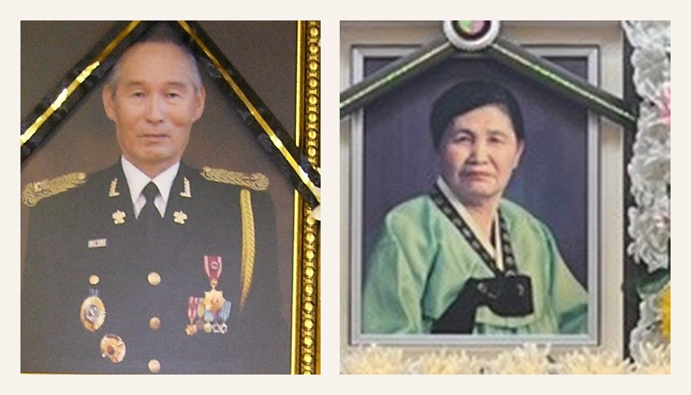

1927
식민지 시대에 태어나다
아버지는 1927년에 태어났다. 어린 시절의 상당 부분을 일본에서 보냈다. 할아버지는 산청군 삼장면 대원사와 인연이 있던 뒤 일본으로 건너가 조선인 노동자들을 상대로 식당 일을 했다고 가족에게 전해진다.

FATHER · 1927
식민지 시대에 태어나 일본에서 자라고, 해방 뒤 귀국해 군인이 되었고, 전쟁과 실직과 재기를 지나 가족을 지켜낸 한 사람의 삶.
아버지에게 직접 들은 이야기는 많지 않다. 지금 남아 있는 이야기의 골격은 주로 어머니가 들려준 기억과 오래된 사진들이다.
한 사람의 생애를 따라가면 한 시대가 보인다
정확한 연도를 모두 알 수는 없지만, 가족에게 남은 이야기들을 따라 아버지가 지나온 시간을 차분히 기록한다.
아버지는 1927년에 태어났다. 어린 시절의 상당 부분을 일본에서 보냈다. 할아버지는 산청군 삼장면 대원사와 인연이 있던 뒤 일본으로 건너가 조선인 노동자들을 상대로 식당 일을 했다고 가족에게 전해진다.
어린 시절 할머니를 일찍 여의고 할아버지와 남동생과 함께 살았다. 아버지는 일본에서 국민학교를 다녔다. 노년에는 어린 시절을 보낸 사세보를 다시 한번 가보고 싶어 하셨다.
해방 당시 아버지는 세는나이로 열아홉 살 무렵이었다. 일본에 남은 친척들도 있었지만 아버지는 한국으로 돌아왔다. 어린 시절을 보낸 땅을 뒤로하고 새로운 삶을 시작한 것이다.
가족에게 전해지는 이야기로 아버지는 국방경비대 제5연대와 인연을 맺었고 이후 하사관으로 복무했다.
아버지는 하사관으로 6·25전쟁에 참전했다. 한창 자신의 삶을 시작해야 할 나이에 전쟁 한복판을 지나야 했다.
전쟁 전후의 어느 시기 아버지는 미군 관련 군무원으로 일했다. 가족 기억으로는 시험에서 1등을 했지만, 전쟁 중 소실된 호적과 신분서류 문제 때문에 정식 군무원이 될 기회를 놓쳤다고 한다.
아버지는 군대 선배의 결혼식에 들러리로 갔다가 어머니를 소개받았다. 그 결혼식의 신부가 어머니의 사촌언니였다. 큰누나가 1955년생인 점을 보면 두 분의 결혼은 1953~1954년 무렵으로 추정된다.
“내가 기억하는 첫집은 대한제유 사옥의 2층이었다.”
할아버지는 대한제유에서 수위 겸 관리인으로 일했고 그 소개로 아버지도 회사에 들어갔다. 당시 할아버지와 재혼한 할머니, 삼촌과 고모들이 아래층에 살고 우리 가족은 사옥 2층에서 생활했던 것으로 기억된다. 넓고 추운 방, 난로, 유단포, 누나의 화상, 홍역에 걸린 아이에게 어머니가 끓여주던 토끼탕이 이 집에 얽힌 가장 오래된 기억들이다.
대한제유가 문을 닫으면서 가족은 사옥을 떠나 자성대의 전셋집으로 이사했다. 아버지는 오랫동안 안정된 직업을 얻지 못했고 작은 신문사 기자 등 여러 일을 거쳤지만 생활은 안정되지 않았다.
아버지의 긴 실직과 불안정한 경제활동 속에서 어머니는 자식들을 키우고 집안을 꾸리느라 큰 고생을 했다. 가족이 무너지지 않도록 현실을 붙잡고 버틴 시간이기도 했다.
어머니가 지인에게 부탁해 아버지는 시장 경비원으로 들어갔다. 이후 그곳에서 정년퇴직할 때까지 한 직장을 지켰다. 오랜 방황 끝에 얻은 안정된 자리였다.
정년퇴직 후에도 아버지는 일을 놓지 않았다. 젊은 사람도 어렵다는 가이드 시험에 합격해 간간이 가이드 일을 했다. 나이 때문에 많은 일을 맡지는 못했지만 새로운 일을 배우고 다시 시작하려는 마음은 남아 있었다.
노년에는 치매가 발병해 힘든 시간을 보냈다. 어린 시절을 보낸 일본 사세보를 다시 보고 싶어 하셨지만 결국 함께 가지 못했다.
6·25전쟁 참전 하사관이었던 아버지는 지금 대전현충원에 어머니와 함께 합장되어 있다. 식민지, 해방, 전쟁, 실직, 재기와 노년을 지나온 두 사람의 삶은 이제 한 자리에 함께 남아 있다.
“무뚝뚝하고 조금은 무서웠던 아버지 뒤에,
내가 알지 못했던 한 시대의 무게가 있었다.”